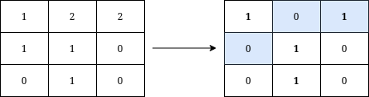
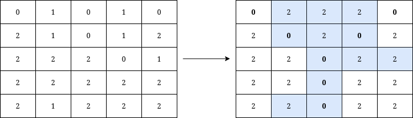

| Category | Difficulty | Likes | Dislikes |
|---|---|---|---|
| Algorithms | Medium | 143 | 32 |
array | hash-table | matrix | counting
visa | roblox | tiktok | capital-one | uber | zeta
You are given a 0-indexed n x n grid where n is odd, and grid[r][c] is 0, 1, or 2.
We say that a cell belongs to the Letter Y if it belongs to one of the following:
The Letter Y is written on the grid if and only if:
Return the minimum number of operations needed to write the letter Y on the grid given that in one operation you can change the value at any cell to 0, 1, or 2.
Example 1:

Input: grid = [[1,2,2],[1,1,0],[0,1,0]]
Output: 3
Explanation: We can write Y on the grid by applying the changes highlighted in blue in the image above. After the operations, all cells that belong to Y, denoted in bold, have the same value of 1 while those that do not belong to Y are equal to 0.
It can be shown that 3 is the minimum number of operations needed to write Y on the grid.Example 2:

Input: grid = [[0,1,0,1,0],[2,1,0,1,2],[2,2,2,0,1],[2,2,2,2,2],[2,1,2,2,2]]
Output: 12
Explanation: We can write Y on the grid by applying the changes highlighted in blue in the image above. After the operations, all cells that belong to Y, denoted in bold, have the same value of 0 while those that do not belong to Y are equal to 2.
It can be shown that 12 is the minimum number of operations needed to write Y on the grid.
Constraints:
3 <= n <= 49 n == grid.length == grid[i].length0 <= grid[i][j] <= 2n is odd.